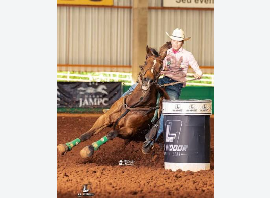
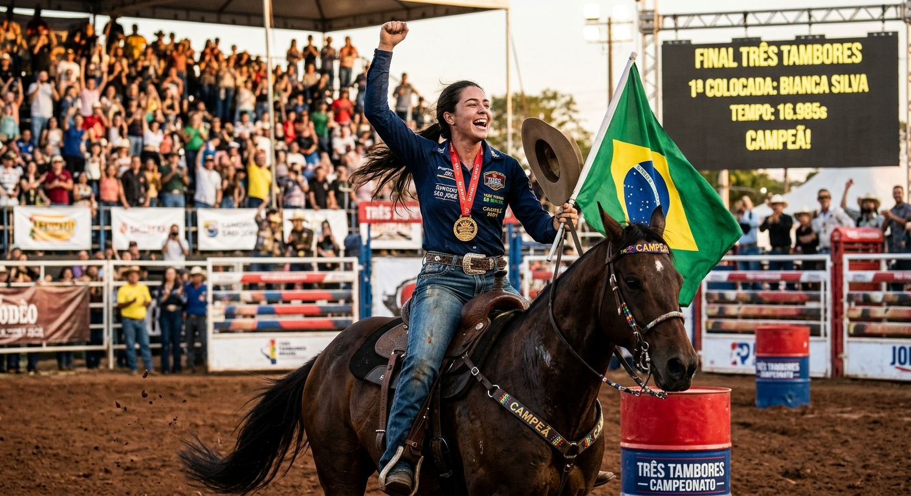

Meu primeiro treino
Sejam bem-vindos ao meu site! Irei ensinar a dar uma boa passada nos tambores e ensinar de maneira técnica como funciona esse mundo.
por: Nicoly Sperduti Locchetti
Venha conhecer mais sobre os cavalos e eles sendo atletas

Sejam bem-vindos ao meu site! Irei ensinar a dar uma boa passada nos tambores e ensinar de maneira técnica como funciona esse mundo.
por: Nicoly Sperduti Locchetti

hoje conquistei meu primeiro titulo nos tres tambores, isso foi resultado de muito esforco e dedicacao de anos
por: Nicoly Sperduti Locchetti